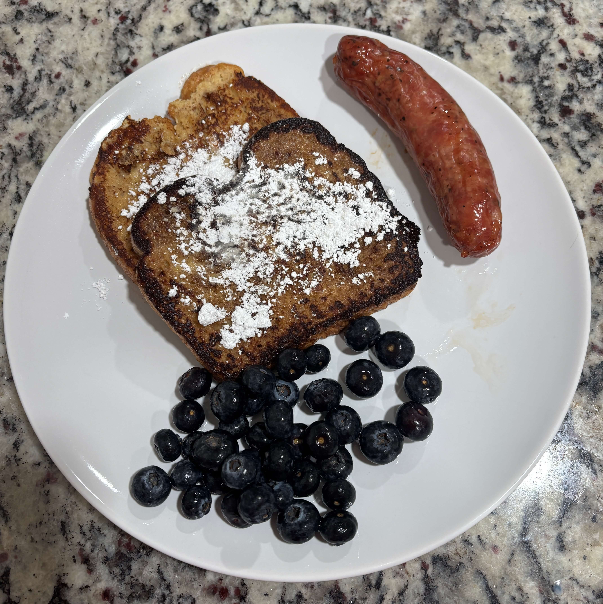

Home
French Toast

Ingredients
- Bread
- 1 less egg than number of bread
- Milk
- Cinnamon
- Nutmeg
- Vanilla extract
Steps
- Crack eggs into a bowl. Add a good splash of milk (just a little less than the volume of eggs). Add a healthy amount of cinnamon and a dash of nutmeg. Add 1/4 tsp of vanilla extract.
- Whisk until eggs are beaten into milk and the spices are distributed
- Put a generous pat of butter into a hot pan on medium or medium-high heat
- Place bread into egg mixture until both sides are coated
- Place coated bread into hot pan. It will cook fast about 1.5-2 minutes check the underside until it is the desired level of brown, flip over and cook the other side
- When you remove it from the pan, add more butter before cooking another slice
- Serve with desired toppings. Syrup, butter, jam, berries